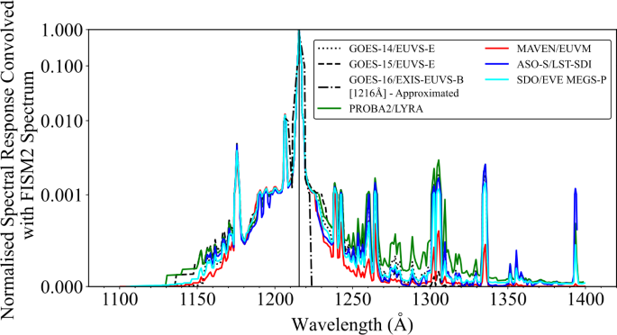
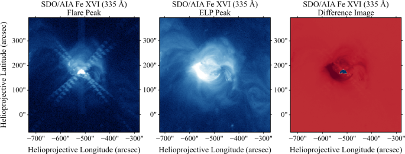
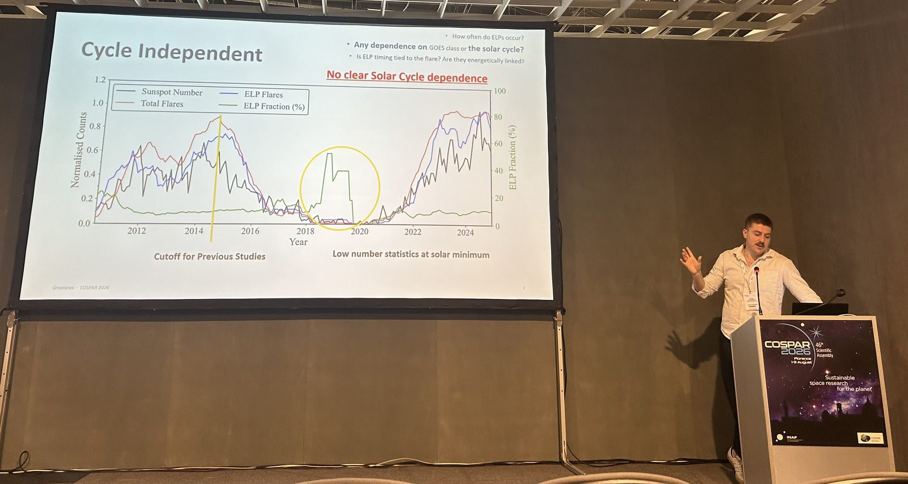
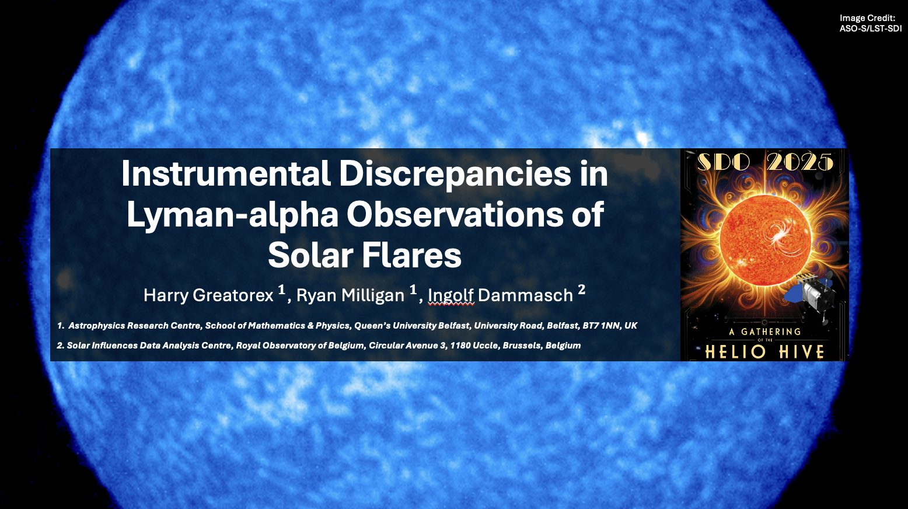

I'm a solar physicist and computationally focused researcher based at the Astrophysics Research Centre, Queen's University Belfast. My research explores the physics of solar flares — from Lyman-alpha emission to the EUV Late-Phase — using multi-wavelength observations from missions including SDO, GOES, and Solar Orbiter.
Alongside my academic work, I bring over five years of experience in scientific Python programming, automated data pipelines, machine learning, and statistical analysis of large, complex datasets. I've led the largest statistical study of EUV Late-Phase flares to date, spent a research placement at NASA Goddard Space Flight Center, and serve on international science teams including ISSI and the SoSpIM instrument team for JAXA's Solar-C mission.
Led the largest statistical study of EUV Late-Phase flares to date (2010–2025), combining automated and manual analysis of SDO/AIA, SDO/EVE, and GOES observations to examine ELP occurrence, timing, and energetics.
PhD research on observational analysis of Lyman-alpha emission in solar flares, including instrumental cross-calibration and the relationship between nonthermal electrons and chromospheric emission.
Built end-to-end Python pipelines for multi-thousand-event flare analysis and deployed supervised ML models (PyTorch) to classify weak signals in noisy observational datasets.
Collaborating with geophysics and space weather experts on the impact of flare-related emission on Earth's ionosphere, as solar physics specialist within an international ISSI team.
Selected figures from my published work, and a few moments from presenting it. Click any image to enlarge.




Each entry links to the published article.
The EUV Late-Phase: Statistical Results from 15 Years of Solar Dynamics Observatory Observations
Solar Physics 301, 6 (2026)
Investigating a Characteristic Time Lag in the Ionospheric F-Region's Response to Solar Flares
Atmosphere 16, 937 (2025)
Spectral Irradiance Variability in Lyman-Alpha Emission During Solar Flares
Solar Physics (2025)
On the Instrumental Discrepancies in Lyman-alpha Observations of Solar Flares
Solar Physics 299, 162 (2024)
Observational Analysis of Lyman-alpha Emission in Equivalent Magnitude Solar Flares
The Astrophysical Journal 954, 120 (2023)
Full publication record on ORCID.
Selected presentations at international meetings. Venue names link to the meeting.
Broadcast and press coverage around the Solar Eclipse at Queen's University Belfast, August 2026.
Research experience, publications, conferences, funding, teaching, and outreach — for academic and research positions.
Download PDFData science, machine learning, pipeline development, and project leadership — for industry and technical roles.
Download PDFThe best way to reach me is by email at hgreatorex01@gmail.com (or h.greatorex@qub.ac.uk for academic matters), or connect with me on LinkedIn.